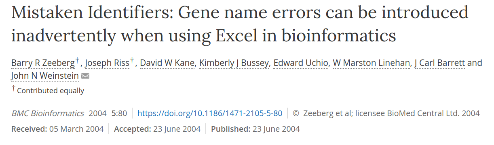
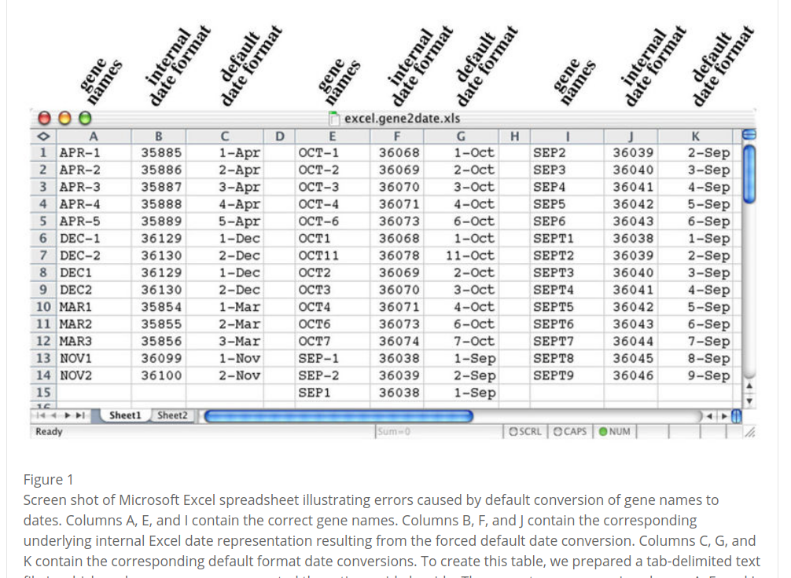
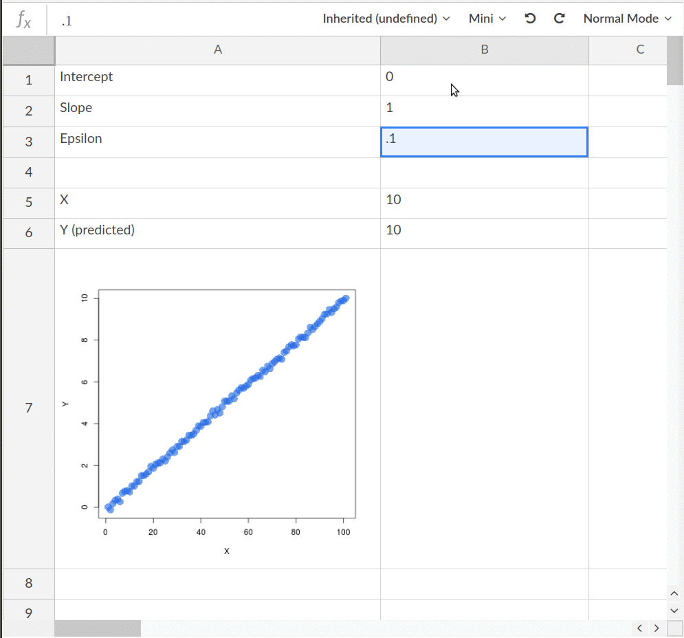

class: center, middle <br><br> ### Community Bazaar #### Berlin, 24 October 2017 <br><br> <div> <a href="https://twitter.com/NokomeBentley">@NokomeBentley</a> , <a href="https://twitter.com/stencila">@stencila</a> </div> <br><br> <div> <div style="display:inline-block; width:100px"></div> </div> --- class: center, middle  --- class: center, middle ### Creating reproducible research content is difficult,... particularly if you're not a coder. --- class: center, middle  .small[Marwick, B. (2017). Computational reproducibility in archaeological research: basic principles and a case study of their implementation. Journal of Archaeological Method and Theory, 24 (2), 424-450.] --- class: center, middle ### Reproducibility "for the rest of us"?...beyond interactive notebooks, towards reproducible document editors. --- <video class="centered" height="580px" controls="controls" autoplay="" loop=""> <source src="doc-screencast.mp4" type="video/mp4"> </video> --- class: center, middle  --- <video class="centered" height="580px" controls="controls" autoplay="" loop=""> <source src="sheet-screencast.mp4" type="video/mp4"> </video> --- class: center, middle <div>   </div> --- class: center, middle  --- class: center, middle  --- class: center, middle  --- class: center, middle ## Thanks!